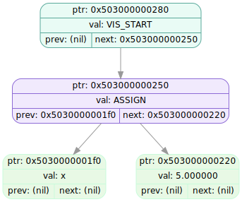

====================[ TREE DUMP #0 ]====================
Timestamp: 2025-12-18 13:50:34
First
===================================================
tree ptr : 0x783f703001b0
root ptr : 0x503000000280
size : 4
stack ptr : 0x506000000020
buff.ptr : (nil)
buff.len : 0
-- Created at (tree ver_info) --
file: main.cpp
func: main
line: 245
-- Called at (passed ver_info) --
file: main.cpp
func: main
line: 279
IDX NODE PTR TYPE LEFT PTR RIGHT PTR VALUE
---- -------------- -------------- -------------- -------------- --------------------
0 0x503000000280 FUNCTION (nil) 0x503000000250 VIS_START
1 0x503000000250 FUNCTION 0x5030000001f0 0x503000000220 ASSIGN
2 0x5030000001f0 IDENT (nil) (nil) x
3 0x503000000220 CONSTANT (nil) (nil) 5.000000
SVG: dumps/tree_dump_000.svg
